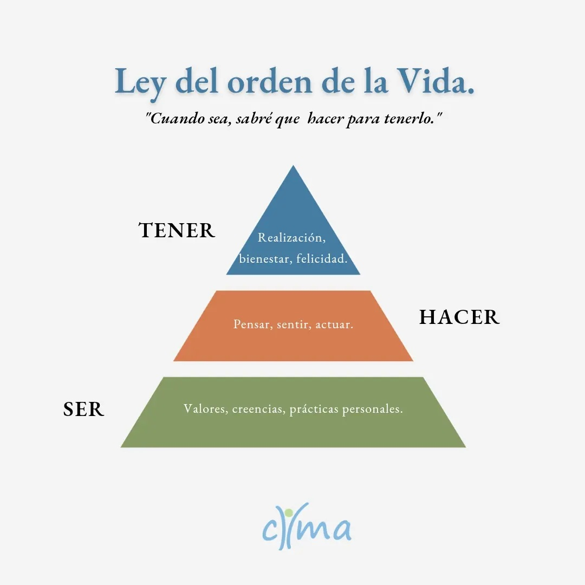
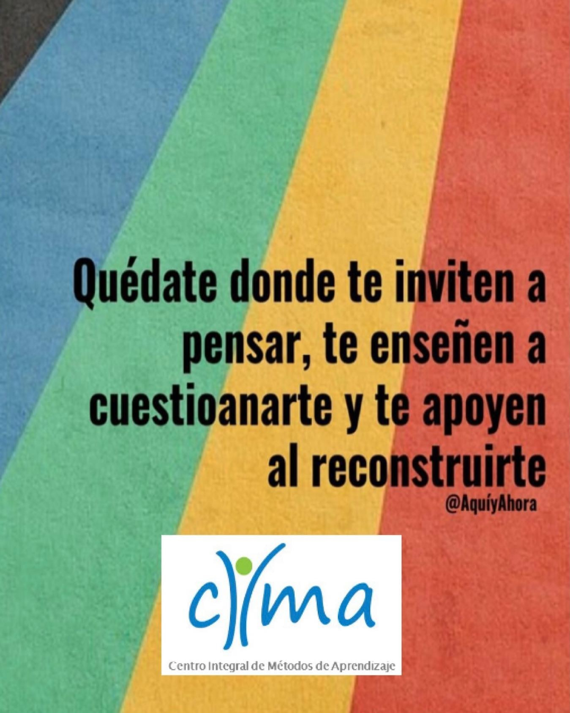
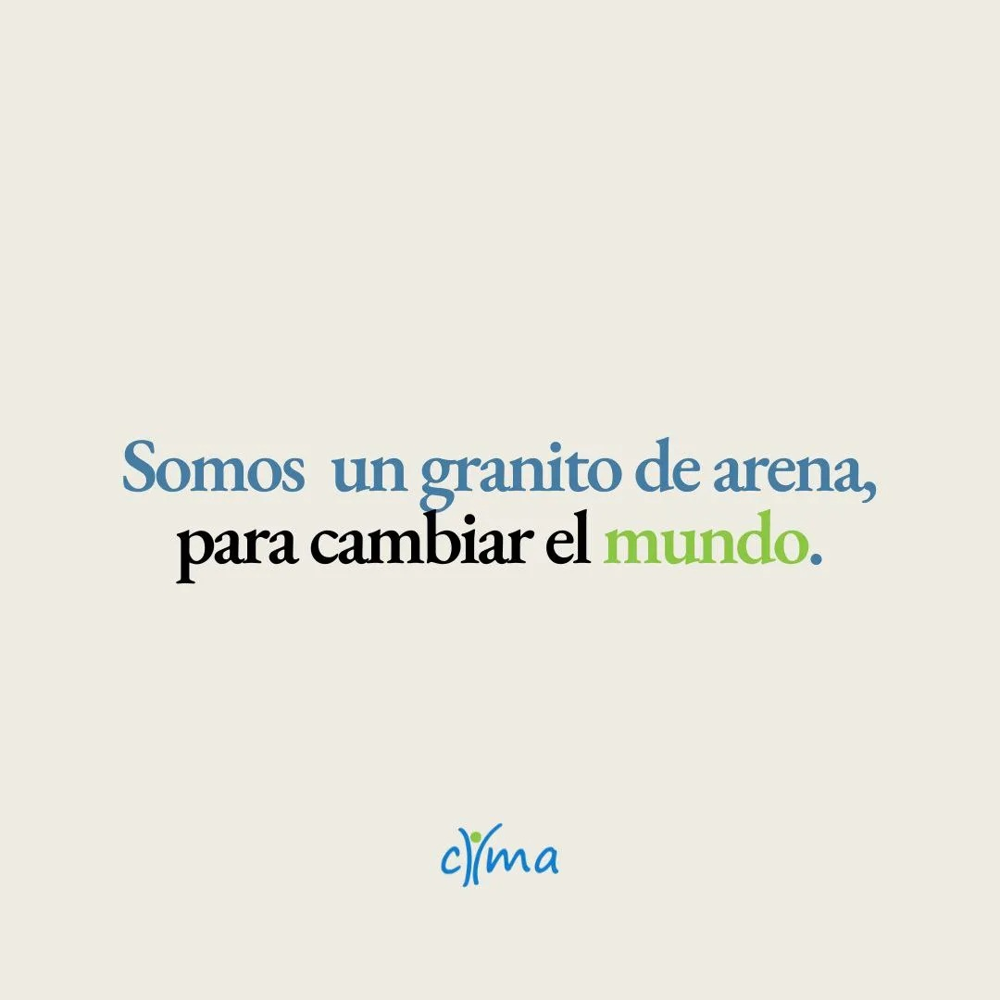

Silvia y Julieta llevan más de una década acompañando a personas que eligieron hacerse cargo de su vida.
Siempre en la vida hay un orden de secuencia que es ser, hacer, tener. Primero somos, después hacemos y luego tenemos.
Las personas que no conocen esta ley afirman: "cuando tenga, ya haré lo que sea necesario." Sin embargo, la afirmación desde esta ley de orden es: cuando sea, sabré qué hacer para tenerlo.

Por eso en CIMA trabajamos desde la base, la transformación del ser.
No es terapia. No es autoayuda. Es un espacio donde alguien te hace las preguntas que vos solo no te animás a hacerte.
El coaching ontológico trabaja sobre cómo mirás las cosas. Porque cuando cambia la mirada, cambia lo que podés hacer. Y cuando cambia lo que hacés, cambia tu vida.
Un coach no te da respuestas. Te acompaña a encontrar las tuyas.En cada conversación hay preguntas que abren puertas. Que te exponen a zonas que nunca exploraste. Que generan la energía necesaria para un cambio profundo y real.

